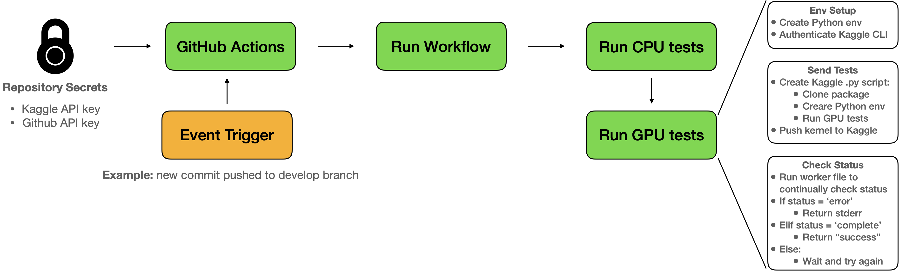

GPU Integration Tests Using Kaggle#
Without a local GPU device, writing unit tests that use a GPU runtime can be difficult. This is because a) it is difficult to migrate an entire codebase to Kaggle/Colab, and b) it is even harder to automate this. Here I present a CI method to run unit tests using a Kaggle GPU runtime.
Problem Statement#
Without a local GPU device, I typically use Colab/Kaggle only at the last step when training. This means that while developing, I can’t verify that the training loop will work on a GPU runtime. Even if I go through the hassle of debugging through Colab/Kaggle, any further changes that I make to the codebase offline will need to be tested again. Working in a team multiplies all of these problems. At this stage automated tests on a GPU runtime become really handy.
Ideally, there would be a CI/CD service that allows you to connect to a GPU runtime for free. However at the time of writing there are no such services. The closest one is Gradient which allegedly allows you to connect to a free M4000 community GPU, however the documentation was not clrea on whether the free GPU is also available on their Workflow service. When I tried this, it required a credit card so I decided to go for alternative methods.
This left me with a solution that interfaces with Colab/Kaggle directly. There were unique challenges associated with both:
Colab: you can ssh into Colab and use the GPU available, however this cannot be automated since you can’t launch a Colab runtime programmatically. You must do this manually through your browser.
Kaggle: you can ssh into Kaggle, but you won’t be able to see the GPU. This is because the run button on Kaggle initialises certain commands before you can use the GPU. I was not able to figure out how to do this programmatically.
The final solution I settled on was to launch a GPU enabled Kaggle script to run integration tests.
Solution#
The solution is to do the following inside a GitHub Actions runtime:
Authenticate Kaggle CLI: use a Kaggle API token to setup the Kaggle CLI. This will allow you to directly interface with Kaggle for running scripts/notebooks using a GPU runtime
Create and Send Tests: create a Python script that will run on a Kaggle GPU runtime. This Python script will clone the repository you wish to test, setup the virtual environment and run
pytest. The Kaggle CLI is then used to send a script with the name and title of the repository you are testing. This is done usingkaggle kernels push $REPO_NAMECheck Kaggle Status: use
kaggle kernels status $REPO_NAMEto check the status of the test. If the status has an error, this means that the test failed and the logs are returned (usingkaggle kernels output $REPO_NAME). If the test has passed, then a success message is returned. Otherwise the status will be checked periodically. The diagram below shows how the solution works end-to-end: 
All of this is written as a separate action.yml [N1]. You can then use this in any repository GitHub Workflow files as such:
integration:
runs-on: ubuntu-latest
steps:
- uses: "namiyousef/action-kaggle-gpu-test"
with:
git_access_token: "${{ secrets.GIT_READ_ONLY_ACCESS_TOKEN }}" # git token (read only)
kaggle_api_key: "${{ secrets.KAGGLE_API_KEY }}" # copy-pasted contents of kaggle.json
repository_name: "${{ github.repository }}"
test_folder: tests/integration # folder to run tests on, from repository being tested
You must add the following secrets to the repository:
GIT_READ_ONLY_ACCESS_TOKEN: an access token that has read only rights. This is needed to clone the GitHub repository in the Kaggle runtime.
KAGGLE_API_KEY: the contents of the
kaggle.jsonAPI key from Kaggle. This is used to configure the CLI
Other Considerations#
This is not the most ideal workflow, since you will have to keep track of multiple API tokens.
The
kaggle kernels output $REPO_NAMEcommand will download all the data associated with the notebook. In practice this means that the action will take longer than expected.
References#
Notes#
[N1]
The Action has been published on the GitHub Markeplace. You can view the raw action.yml file in its GitHub repository. [go back]